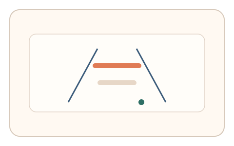
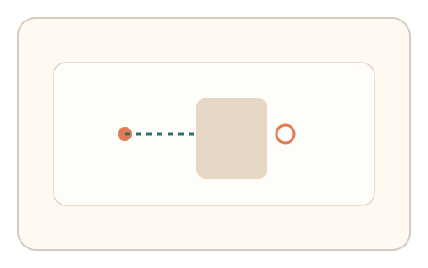
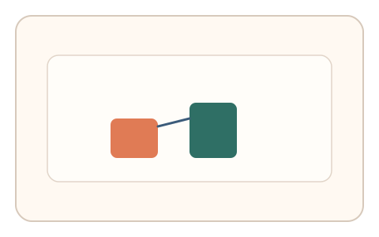

#134
E：双底座耦合 × 双信号 × 多阶段/双任务（认知偏置 + 生理/时域）
已扩展
错觉对齐‑预测误差
先对齐错觉图形，再预测遮挡物体位置，比较错觉偏差与预测误差的关联。
概念原文
先校准错觉图形，再预测遮挡物体的出现位置，系统比较错觉偏差与预测误差的任务内关联。
用“偏差‑预测”耦合削弱脚本模仿。
研究背景
视觉错觉会系统性偏移对齐判断，遮挡预测依赖对运动与空间的外推。两种偏差在同一会话内的关联更难被脚本复刻。
核心机制
- 呈现错觉图形并要求对齐校准。
- 随后展示遮挡运动并要求预测出现位置。
- 记录错觉偏差与预测误差。
- 比较两者的方向一致性与相关性。
用户流程
- 步骤 1：用户完成错觉对齐校准。
- 步骤 2：预测遮挡物体的出现位置。
- 步骤 3：系统比较偏差与误差关系。
判定信号
错觉对齐偏差
错觉诱发的偏差具有稳定方向。
遮挡预测误差
外推误差受个体感知与策略影响。
判定逻辑
偏差与误差需呈合理关联且落在基线区间；无关联或异常一致判异常。
对抗面
- 脚本直接计算几何对齐与预测位置
- 重放历史对齐与点击坐标
防御与缓解
- 随机化错觉类型与方向
- 变化遮挡速度与出现时机
- 引入多轮相对比较
可达性与风险
提供简化图形与更大目标，提高低视力用户可用性。
- 错觉效应弱导致偏差不明显
- 屏幕尺寸影响预测精度
可视化状态

状态 1：错觉对齐
在错觉线索中进行对齐校准。

状态 2：遮挡预测
预测遮挡物体的出现点。

状态 3：误差关联
比较错觉偏差与预测误差。
参考资料
Ponzo illusion
说明错觉导致的尺度偏差。
Representational momentum
说明运动外推与预测误差。